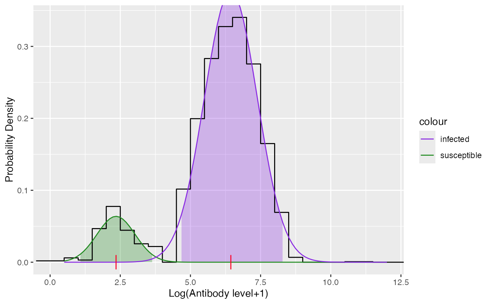
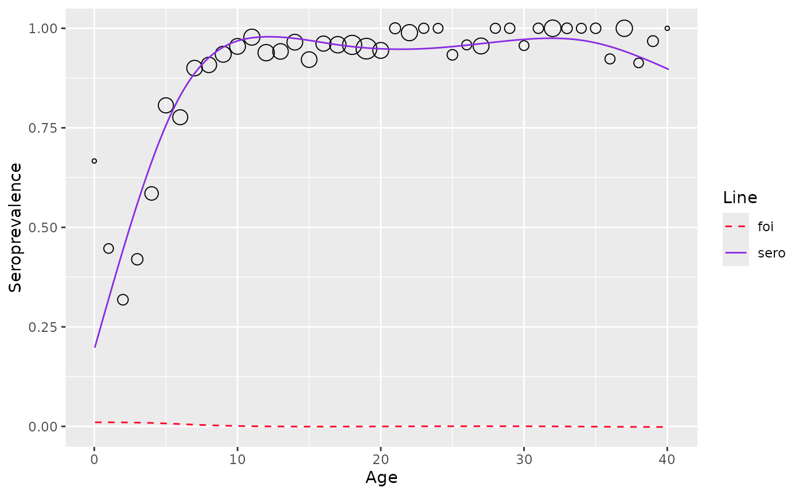

Modeling directly from antibody levels
model_quantitative_data.RmdMixture model
Proposed model
Two-component mixture model for test result with being the latent mixing component having density and with being the age-dependent mixing probability can be represented as
The mean thus equals
From which the true prevalence can be calculated by
Force of infection can then be calculated by
Fitting data
To fit the mixture data, use mixture_model function
df <- vzv_be_2001_2003[vzv_be_2001_2003$age < 40.5,]
df <- df[order(df$age),]
data <- df$VZVmIUml
model <- mixture_model(antibody_level = data)
#> Warning in mix(data, starting_values, dist = "norm"): The optimization process
#> terminated because either the estimates are approximate local optimal solution
#> or steptol is too small
model$info
#>
#> Parameters:
#> pi mu sigma
#> 1 0.1088 2.349 0.6804
#> 2 0.8912 6.439 0.9437
#>
#> Distribution:
#> [1] "norm"
#>
#> Constraints:
#> conpi conmu consigma
#> "NONE" "NONE" "NONE"
plot(model)
sero-prevalence and FOI can then be esimated using function
estimate_from_mixture
est_mixture <- estimate_from_mixture(df$age, data, mixture_model = model, threshold_status = df$seropositive, sp=83, monotonize = FALSE)
plot(est_mixture)
#> Warning: No shared levels found between `names(values)` of the manual scale and the
#> data's fill values.